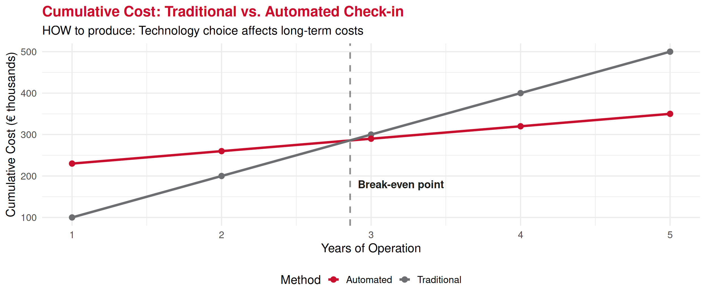
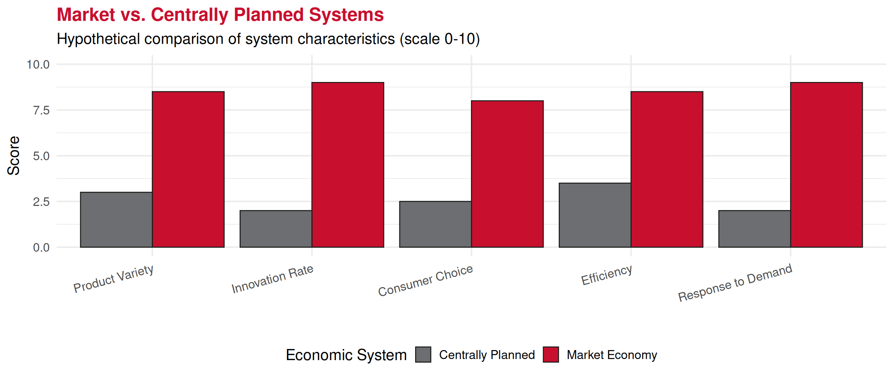
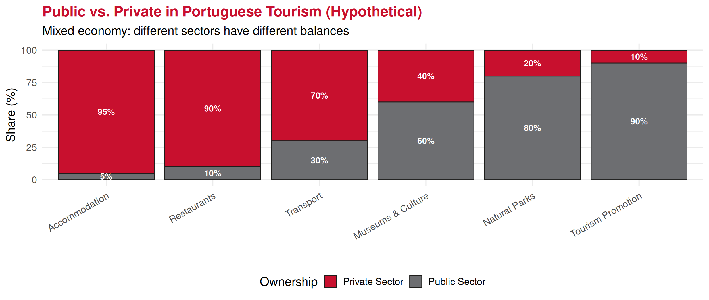
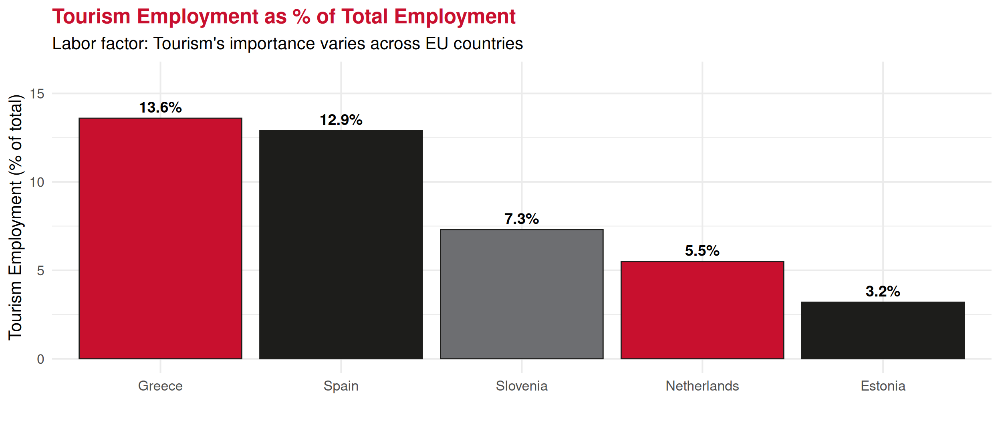

Economics Fundamentals
Lecture 2: Three Economic Problems & Economic Systems
Recap: Lecture 1 ⏪
Key concepts we covered:
📈 Economics studies scarcity and efficiency
🔭 Macroeconomics (big picture) vs. 🔬 Microeconomics (individual decisions)
❓ Three fundamental questions: WHAT, HOW, FOR WHOM
📊 Positive (facts) vs. 💭 Normative (values) economics
. . .
👉 Today: How do different economic systems answer these questions?
The Three Fundamental Economic Problems
Every Society Must Solve 🤔
The Three Economic Problems
Every economy, regardless of its system, must answer three fundamental questions about resource allocation.
. . .
1. WHAT goods and services to produce?
- Which products? How much of each?
- Current consumption vs. future investment?
2. HOW to produce them?
- Which technologies? Which resources?
- Labor-intensive vs. capital-intensive?
3. FOR WHOM are goods produced?
- How to distribute output?
- Who gets what share of production?
Problem 1: WHAT to Produce? 📦
Tourism Sector Choices
🏨 Hotels & Accommodation
🚌 Transport Infrastructure
🍴 Restaurants & Dining
🏖️ Beach Facilities
🏛️ Museums & Culture

💡 Scarce resources mean choosing between alternatives!
Problem 2: HOW to Produce? ⚙️
Different Production Methods: Hotel Check-in
Traditional Method 👥
- Human receptionists
- Paper forms
- Phone bookings
- High labor cost
- Flexible service
- Personal touch
💰 Cost per check-in: ~€8-12
Automated Method 🤖
- Self-service kiosks
- Online booking
- Mobile check-in
- High capital cost
- 24/7 availability
- Limited flexibility
💰 Cost per check-in: ~€2-4
👉 Decision factors: Initial investment, labor costs, customer preferences, technology reliability
HOW: Production Cost Comparison 📉
Problem 3: FOR WHOM? 🎯
Who consumes the tourism services produced?
💼 Business Travel
👪 Family Vacations
🏃 Sport Tourism
🌟 Luxury Travel
⛺ Nature Tourism
🧗 Adventure Travel
🧑🎓 Educational Tourism
🌴 Beach Holidays
👉 Distribution depends on: Income levels, prices, preferences, government policies
Economic Systems
How Societies Organize Production 🏭
Economic System
The way a society organizes the production and distribution of goods and services to answer the three fundamental questions.
. . .
Three fundamental types:
1️⃣ Market Economy (Laissez-faire) - Decisions by individuals and firms
2️⃣ Centrally Planned Economy - Government makes decisions
3️⃣ Mixed Economy (Most common today) - Combination of market and government
Market Economy 📈
Individuals and companies make key production and consumption decisions through markets
Key Features ✅
🏠 Private ownership of resources
🤝 Voluntary exchange in markets
💸 Profit motive drives decisions
⚖️ Price signals coordinate activity
The “Invisible Hand” ✋
- No central coordinator needed
- Self-interest → social benefit
- Competition drives efficiency
- Markets allocate resources
Adam Smith, “The Wealth of Nations” (1776)
Market Economy: Advantages & Disadvantages
Advantages ✔️
🚀 Efficient allocation - Resources go where most valued
💡 Innovation incentives - Profit rewards new ideas
🛒 Consumer sovereignty - Demand drives production
📈 Flexibility - Quick adaptation to changes
Disadvantages ⚠️
💔 Inequality - Unequal income distribution
🏭 Market failures - Externalities, public goods
💰 Monopoly power - Reduced competition
🌱 Short-term focus - May ignore long-term issues
Market Economy in Tourism ✈️

Centrally Planned Economy 🏦
Government makes key production and consumption decisions
Key Features 📋
🏢 State ownership of resources
💹 Central planning authority
🧾 Government quotas and targets
🛠️ Command system (not prices)
The Central Plan 🗺️
- Government decides WHAT, HOW, FOR WHOM
- 5-year plans common
- Quotas for production
- Fixed prices
Examples: Soviet Union (historical), Cuba, North Korea
Centrally Planned: Advantages & Disadvantages
Advantages ✔️
⚖️ Equality focus - More equal distribution
🌱 Long-term planning - Can prioritize future
🛡️ Social stability - Basic needs guaranteed
🚀 Rapid mobilization - Can focus resources quickly
Disadvantages ❌
🐌 Inefficiency - Information problems, no market signals
⛔ No innovation - Weak incentives to improve
😞 Consumer dissatisfaction - Limited choice, shortages
📜 Bureaucracy - Slow, rigid decision-making
Centrally Planned Economy Example 🏨

Mixed Economy 🤝
Mixed Economy
Combines elements of both market and centrally planned systems. Most modern economies are mixed, with varying degrees of market freedom and government intervention.
. . .
Characteristics:
🏠 Private & public ownership coexist
📈 Markets operate but with government regulation
🛡️ Government provides public goods and services
⚖️ Redistributive policies to address inequality
Mixed Economy: The Balance :scales:
Government’s Role in Mixed Economies
Market Activities 📈
Most goods and services produced privately based on profit motive and consumer demand
Tourism example: Hotels, restaurants, tour operators
Government Activities 🏢
Public goods, regulation, redistribution, addressing market failures
Tourism example: National parks, tourism promotion, safety regulations
👉 The mix varies: USA (more market), Nordic countries (more government), Portugal (balanced)
Portugal: A Mixed Economy Example 🇵🇹

Production Factors
The Inputs of Production 🏭
Factors of Production
The resources (inputs) used to produce goods and services. All economic systems must decide how to allocate these scarce factors.
. . .
Three main factors:
🌿 Land - Natural resources
👥 Labor - Human effort
🏢 Capital - Produced resources
💡 (Some add: Entrepreneurship - organizing & risk-taking)
Land 🏞️
Natural resources and raw materials
Examples 🌍
- Agricultural land
- Energy resources (oil, gas)
- Minerals and metals
- Forests and water
- Clean air
- Climate conditions
In Tourism 🏖️
- Beaches and coastlines
- Mountains and landscapes
- Climate (sun, snow)
- Natural parks
- Geographic location
Portugal’s natural assets are key tourism factors!
Labor 👷
Human effort - physical and mental work
Characteristics 💪
- Physical work
- Mental work
- Skills & education (human capital)
- Time and effort spent
- Experience and training
In Tourism 🏨
- Hotel staff and management
- Tour guides
- Restaurant workers
- Airline crew
- Event organizers
Labor-intensive industry!
Capital 🏗️
Produced resources used to make other goods/services
Types ⚙️
- Physical capital: Machinery, buildings
- Infrastructure: Roads, airports
- Technology: Software, systems
- Financial capital: Money for investment
Not the same as money - capital produces!
In Tourism ✈️
- Hotel buildings
- Airports and airlines
- Booking systems
- Restaurant equipment
- Transport vehicles
High capital requirements!
Production Factors in European Tourism 📊

Comparing Economic Systems 📋
| Aspect | Market Economy | Centrally Planned | Mixed Economy |
|---|---|---|---|
| Ownership | Private | State | Both |
| Coordination | Prices/markets | Central plan | Markets + regulation |
| Incentives | Profit | Quotas/orders | Profit + public interest |
| Innovation | High | Low | Medium-High |
| Efficiency | Generally high | Often low | Variable |
| Equity | Low (unequal) | High (equal poverty) | Medium |
| Examples | (Pure: rare) | Cuba, N. Korea | USA, EU, Portugal |
Real-World Example: COVID-19 Tourism Response 😷
Different Systems, Different Responses
Market-Led: Portugal 🇵🇹
✅ Private hotels closed voluntarily
💰 Government support (furlough schemes)
📈 Market-driven reopening
💡 Rapid innovation (safety protocols)
🚀 Fast recovery: 31.6M visitors (2024)
Centrally-Planned: Cuba 🇨🇺
🏢 State-owned hotels closed by decree
🚫 No market signals
📜 Political decision to reopen
🐌 Limited innovation
😞 Slower recovery: ~50% of 2019 levels
Key Concepts Summary 📑
| Concept | Definition |
|---|---|
| Three Economic Problems | WHAT, HOW, FOR WHOM to produce |
| Market Economy | Private decisions via prices and markets |
| Centrally Planned | Government makes all major decisions |
| Mixed Economy | Combination (most common today) |
| Land | Natural resources used in production |
| Labor | Human effort (physical & mental) |
| Capital | Produced resources used to make goods |
Exercises 📝
Time for practice!
Let’s test your understanding.
Exercise 1: Multiple Choice
In a market economy, the question “FOR WHOM are goods produced?” is primarily answered by:
A. Government planners deciding who gets what
B. Equal distribution to all citizens
C. Willingness and ability to pay
D. First-come, first-served basis
Answer: C - In market economies, goods go to those willing and able to pay for them. This is how markets allocate resources based on purchasing power.
Exercise 2: Multiple Choice
Which of the following is an example of the CAPITAL factor of production in tourism?
A. A tour guide’s knowledge and skills
B. The beach at Algarve
C. A hotel building in Lisbon
D. The manager’s decision-making ability
Answer: C - The hotel building is capital (produced resource used to provide services). A is labor, B is land, D is labor/entrepreneurship.
Exercise 3: Open Question
Scenario: The Portuguese government is considering two policies for tourism development:
- Policy A: Let private investors freely build hotels wherever they want
- Policy B: Government decides where hotels should be built and provides subsidies
Questions:
Identify which economic system each policy represents
List 2 advantages and 2 disadvantages of each policy
Calculate: If a private hotel costs €5M to build and generates €800k annual profit, what’s the payback period?
Recommend which policy Portugal should adopt (justify with economic reasoning)
Exercise 3: Solution (Part a & b)
a) Economic systems:
- Policy A: Market economy approach
- Policy B: Centrally planned economy approach
b) Advantages and Disadvantages:
| Policy A (Market) | Policy B (Planned) |
|---|---|
| ✓ Efficient allocation (demand-driven) | ✓ Can correct market failures |
| ✓ Innovation & competition | ✓ Ensures regional development |
| ✗ May ignore externalities (overtourism) | ✗ Information problems |
| ✗ Unequal regional development | ✗ Bureaucratic inefficiency |
Exercise 3: Solution (Part c & d)
c) Payback period calculation:
\[\text{Payback Period} = \frac{\text{Initial Investment}}{\text{Annual Profit}} = \frac{€5,000,000}{€800,000} = 6.25 \text{ years}\]
d) Recommendation: Mixed approach (combination)
👉 Use market mechanism (Policy A) as primary driver - private sector is more efficient at identifying demand and driving innovation
👉 Add selective government intervention (Policy B elements) - regional development incentives, environmental regulations, infrastructure investment
💡 This is what Portugal actually does - mostly private sector with strategic government support!
Next Lecture 📚
Lecture 3 (February 12, 2026):
- Rationality and Economic Behavior
- Choices and Decision-Making
- Opportunity Cost (crucial concept!)
- Production Possibilities Frontier (PPF)
💡 Preparation: Think about a recent choice you made. What did you give up to make that choice?
Thank You! 👋
Questions?
📧 paulo.fagandini@ext.universidadeeuropeia.pt
Next class: Thursday, February 12, 2026